Портфолио
Кудрявцев Андрей Алексеевич
г. Москва, 28 лет
Работа №1
AUP
Браузерный полифонический синтезатор
Typescript, React, ToneJS
2022г.
Интерфейс электронных музыкальных инструментов оказывает непосредственное влияени на то какая музыка с их помощью создается.
Некоторые музыкальные стили были определены конкретными музыкальными инструментами, и их интерфейс не в последнюю очередь повлиял на то, как звучит созданная с его помощью музыка.
Синтезатор AUP был создан, чтобы проверить, как его особенности интерфейса повлияют на издаваемый им звук.
Особенности интерфейса
- Новый осциллятор может быть добавлен нажатием на крайнюю справа кнопку [ + ].
- Осциллятор может быть активирован кнопкой осциллятора [▯(1)] или клавишей клавиатуры, соответствующей цифре в скобках на кнопке осциллятора. При зажатой клавише shift активность осциллятора будет зафиксирована в выбранном положении.
-
Нажатием на [ + ] под кнопкой осциллятора можно добавить строку изменения параметра осциллятора,
которая состоят из:
- элемента выбора параметра для изменения;
- элемента для ввода значения параметра;
- кнопки [_(q)], нажатие на которую (или соответствующую букве в скобках клавишу на клавиатуре) применяет введенное значение для параметра осциллятора.
-
Клавишами стрелок можно изменять отступ управляющих клавиш клавиатуры.
Особенности синтеза
- Четыре типа волны: синус, пила, треугольник, квадрат.
- ADSR-фильтр.
- Волна осциллятора и его ADSR-фильтр могут быть использованы для модуляции параметров.
Галерея
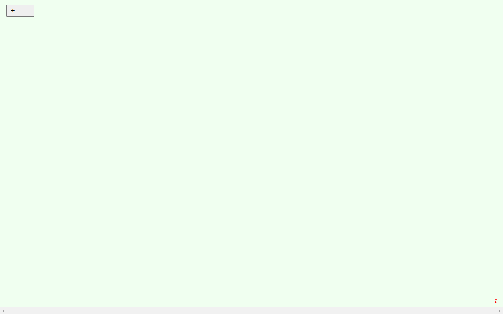
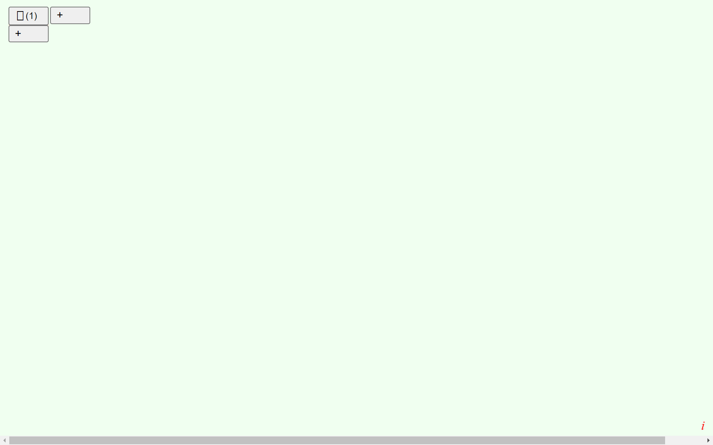
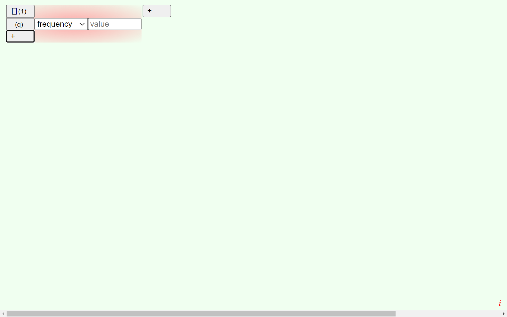
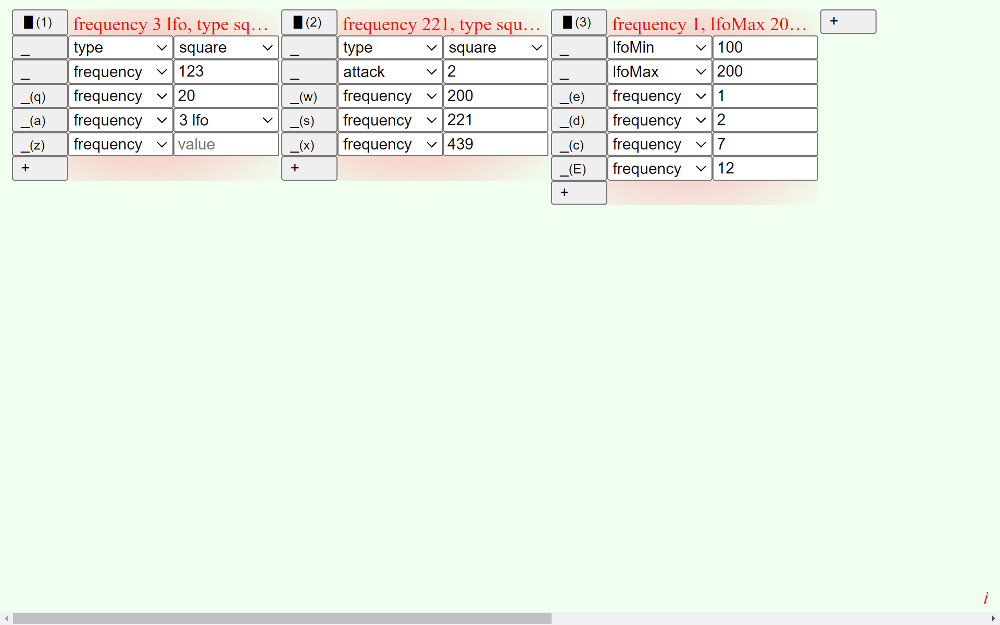
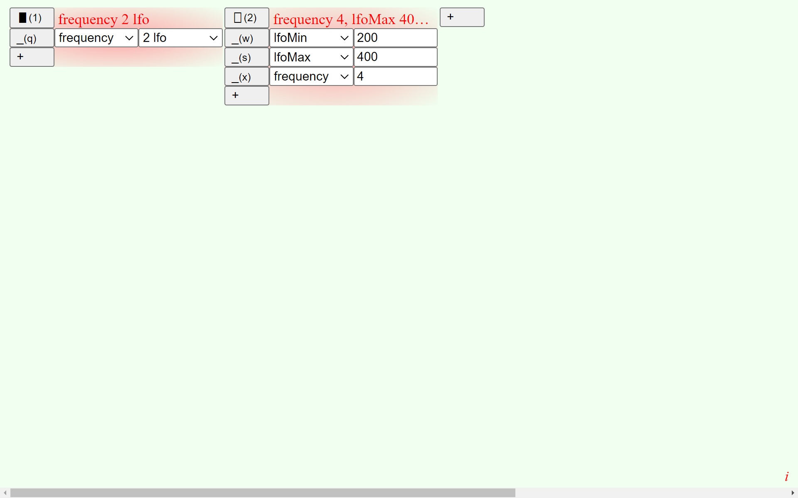
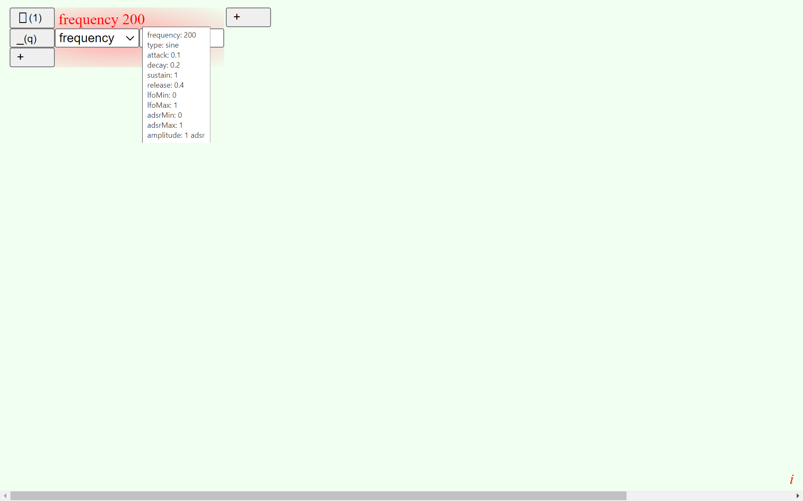
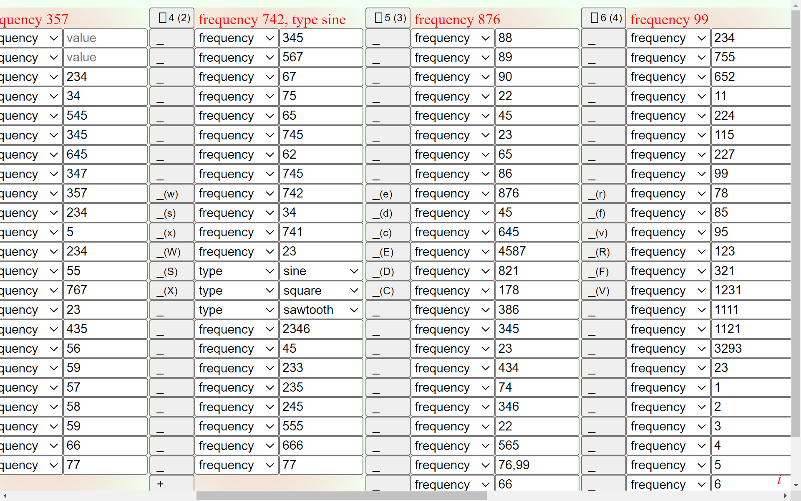
Управление
Интуитивно (для автора) напрашивающийся способ управления синтезатором сосотоит из этапов подготовки осцилляторов и непоредственно игры при помощи клавиатуры.
Отсутствие секвенсора позволяет проявиться собственному ритму пользователя, а большое количество осцилляторов и их комбинаций дают широкий диапазон звучаний.
Ссылки
aup v2.1
Работа №2
Rasterscape
Растровый графический редактор
Typescript, React, Redux, WebGL, SVG
2019-2024гг.
Задачи
- Смешение цифровой живописи с алгоритмической графикой.
- Возможноть создавать изображения с помощью алгоритмов генеративной графики, параметры которых так или иначе привязаны к пользовательскому вводу (мышь, клавиатура, камера).
- Заменить случайность на пользовательский ввод для увеличения физического влияния пользователя на генерируемый объект.
- Схематическая имитация собственных патернов рисования на физических носителях
Особенности
- Модуляция числовых параметров с помощью волновых функций или вводимого пользователем массива чисел.
- Настраиваемые горячие клавиши позволяют изменять числовые параметры во время рисования.
- Нельзя выбрать цвет кисти.
- Контринтуитивный интерфейс.
- Slitscan3D (Алгоритм на основе классического slitscan, N последник кадров полученных с камеры складываются в циклически заполняемую кубическую текстуру для изображения на канвасе её сечения поверхностью, которая может быть выражена математической формулой, rbga каналом изображения или линейчатой поверхностью на основе вводимого вручную одномерного массива)
Обзор функций
Видеообзор функций версии 0.20.1
Большинство функций актуальны для текущей версии
Изменения версии 24.0-beta
-
Slitscan3D: оптимизирован с использованием WebGl, доработан интерфейс.
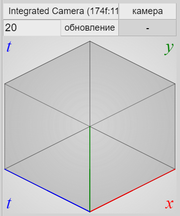
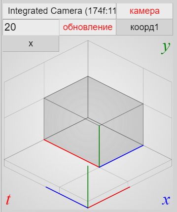
-
Доработан интерфейс повторов.
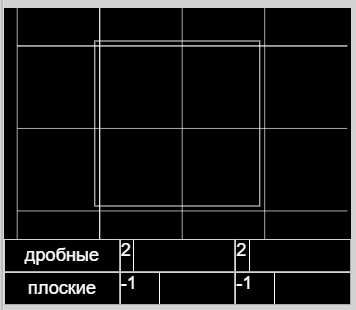
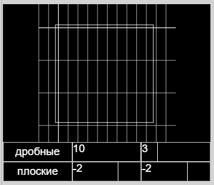
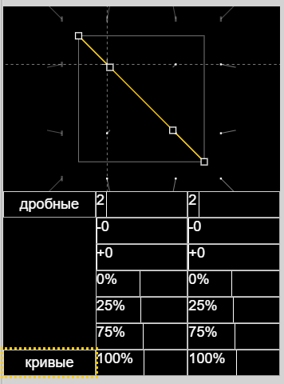
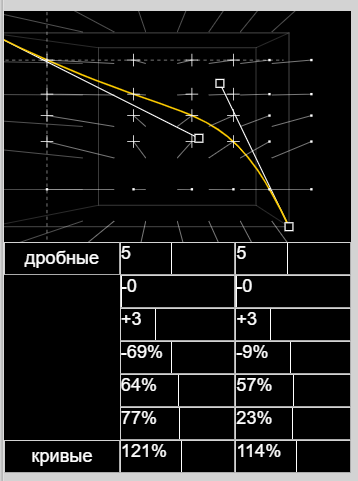
-
Кисть-Выделение.
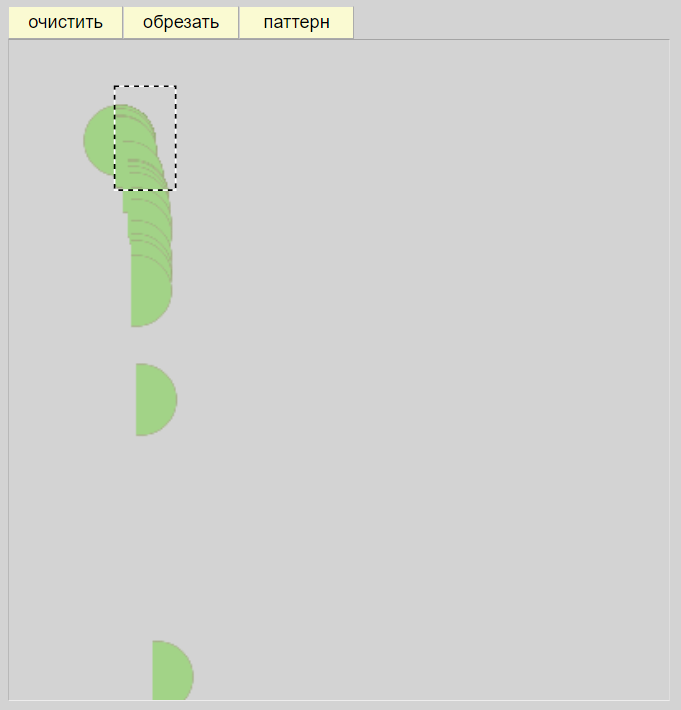
-
Ручной ввод одномерных функций от координат и от времени.
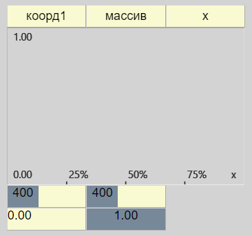
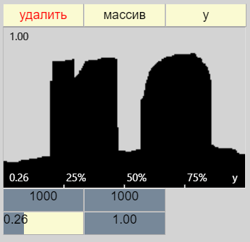
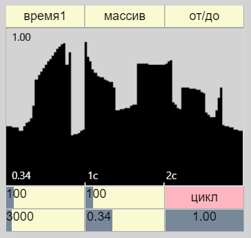
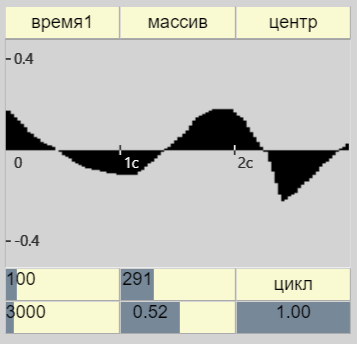
Работы:
веб-зин
Ссылки
rasterscape v24.0-beta
Редактор не предназначен для использования на мобильных устройствах.
Работа №3
Графика
2023г.
Графика без концептуальной ногарузки. Имеет личное символическое и эстетическое значение.
Во вложении.
2024г.